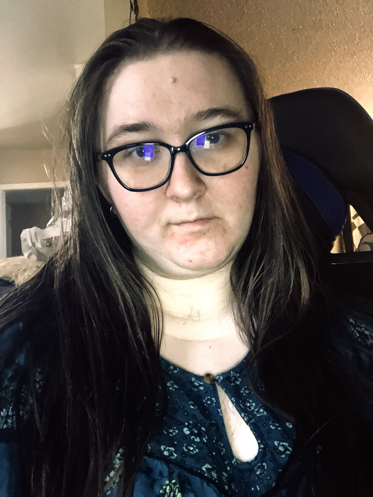

Designer Statement

Hello, I'm Hope!
I am a Front-End Developer and Graphic Design student with a passion for creating engaging digital experiences. My journey into web development began while attending Full Sail University, where I discovered how much I enjoyed building websites and bringing ideas to life through code.
What started as learning the fundamentals of HTML and CSS quickly grew into a genuine passion for front-end development. I enjoy combining creativity and problem-solving to design websites that are both visually appealing and easy to use. Through coursework and personal projects, I have continued to expand my skills in web design, responsive layouts, branding, and user experience.
In addition to web development, I am pursuing a degree in Graphic Design. This combination allows me to approach projects from both a technical and creative perspective. Whether I am designing a brand identity, creating marketing materials, or developing a website, I enjoy finding ways to create meaningful and memorable experiences for users.
Outside of school and design work, I enjoy gaming, content creation, and sharing my experiences with others online. These interests inspire much of my creativity and help me connect with communities through both design and storytelling.
My goal is to continue growing as both a developer and designer while creating work that blends creativity, functionality, and strong visual communication.
My Design Approach
I approach design as a balance between creativity, functionality, and communication. As both a Front-End Developer and Graphic Design student, I enjoy combining visual design with technical problem-solving to create digital experiences that are engaging, accessible, and easy to use.
I am especially interested in web design, responsive layouts, branding, and creating meaningful experiences for users. I want my work to not only look good, but also communicate clearly and serve a purpose.
Elevator Pitch
Hi, I’m Hope Scott, a Front-End Developer and Graphic Design student passionate about creating engaging digital experiences. I combine my technical skills in HTML, CSS, and responsive web design with my background in visual design, branding, and user experience. I enjoy turning ideas into websites that are both functional and visually compelling. I’m looking for opportunities to grow as a front-end developer and designer while creating meaningful experiences for users.
Let's Connect
Let’s connect and create something meaningful together.
Get in Touch